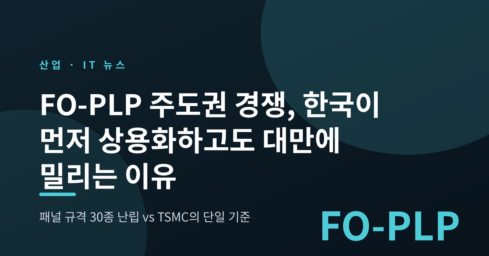
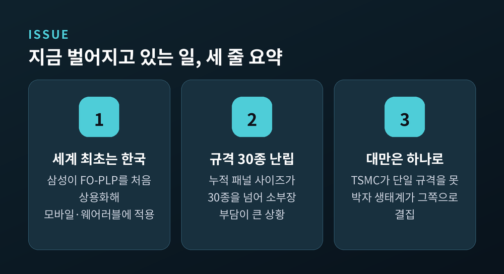
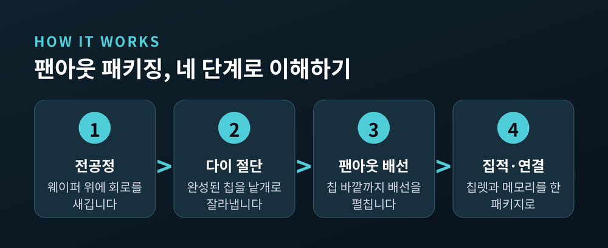
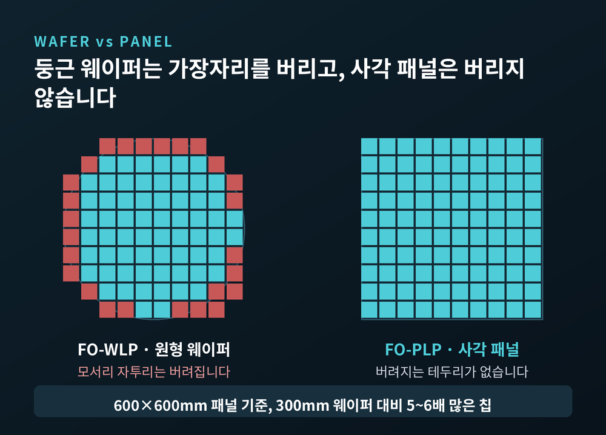
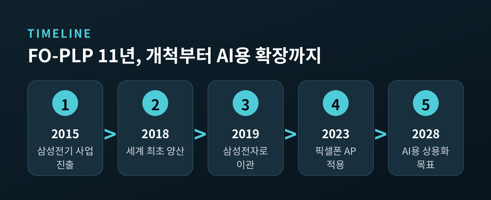
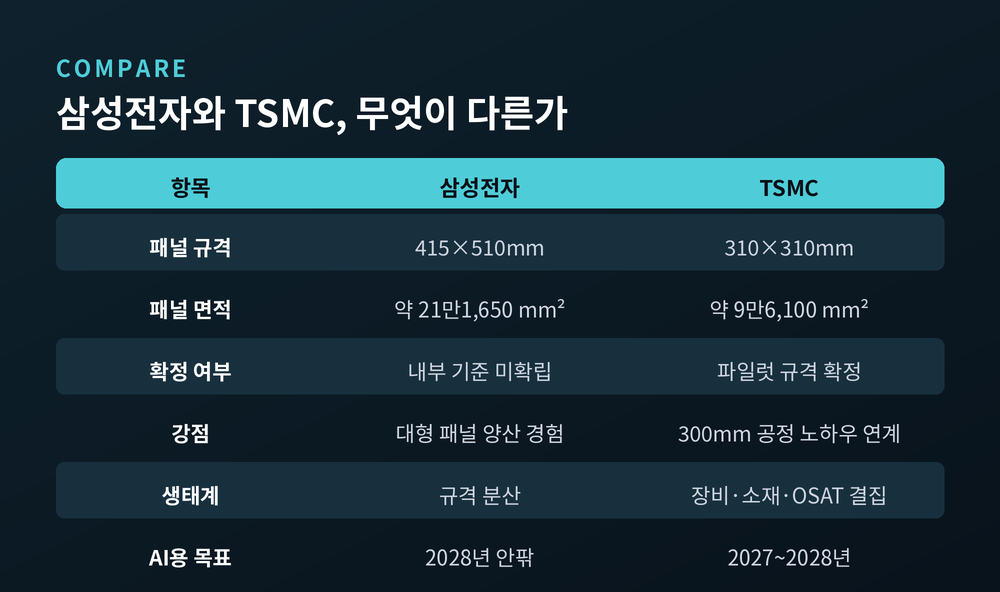
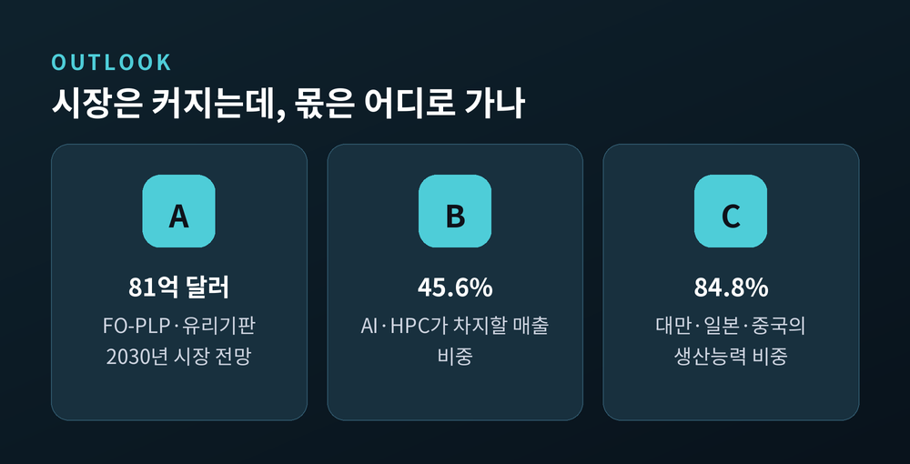

FO-PLP 주도권 경쟁, 한국이 먼저 상용화하고도 대만에 밀리는 이유

이번 글에서는 FO-PLP(팬아웃 패널레벨 패키징)를 둘러싼 한국과 대만의 주도권 다툼을 정리해 보겠습니다. 8월 하순 국내 언론이 잇달아 다룬 사안입니다. 기술 자체는 우리가 세계에서 가장 먼저 상용화했는데, 정작 시장의 기준은 대만이 잡아가고 있다는 진단이 나왔습니다.

무슨 일이 있었나
전자신문은 2026년 8월 23일 「'PLP 개척' 韓, 대만에 주도권 빼앗기나」를 보도했습니다. 이튿날 지면 1면에 실린 기사입니다. 같은 날 「PLP기술 선도력 빛낼 규격 만들자」라는 사설도 함께 나갔습니다.
핵심 지적은 하나였습니다. 한국이 세계 최초로 상용화한 패널레벨패키징 기술이, 국내 기준의 부재와 생태계 미비로 대만 TSMC 진영에 종속될 수 있다는 것입니다.
문제의 출발점은 '패널 크기'입니다. 업계에 따르면 현재 310×310mm, 415×510mm, 600×600mm, 700×700mm 등 서로 다른 크기의 패널이 뒤섞여 쓰이고 있습니다. 국내외 각 기업이 생산한 패널 사이즈는 누적 기준 30종을 넘습니다.
원인은 의외로 단순합니다. PLP용으로 전환한 공장 라인이 원래 인쇄회로기판 라인이었는지 LCD 라인이었는지에 따라 패널 크기가 제각각으로 굳어졌기 때문입니다. 장비 회사 입장에서는 고객이 바뀔 때마다 다른 규격에 맞춰 설비를 다시 손봐야 합니다. 개발 비용도 시간도 흩어집니다. 수율도 함께 떨어집니다.
팬아웃 패키징이란 무엇인가
용어부터 풀어보겠습니다.
반도체를 만드는 과정은 크게 둘로 나뉩니다. 웨이퍼 위에 회로를 새기는 전공정, 그리고 완성된 칩을 잘라내 외부와 연결하고 보호하는 후공정입니다. 이 후공정이 '패키징'입니다.
예전에는 패키징이 조연이었습니다. 칩 성능은 회로를 얼마나 미세하게 새기느냐로 결정됐으니까요. 지금은 다릅니다. 미세공정이 물리적 한계에 다가서면서, 여러 칩을 한 패키지 안에 어떻게 잘 묶느냐가 성능을 좌우하게 됐습니다.
'팬아웃(Fan-Out)'은 칩 바깥쪽까지 배선을 넓게 펼치는 방식입니다. 칩 크기에 갇히지 않고 입출력 통로를 더 많이 확보할 수 있습니다. AI 칩은 연산용 칩렛 여러 개와 HBM(고대역폭메모리)을 한 패키지에 나란히 얹습니다. 서로 주고받아야 할 신호가 폭발적으로 많아졌습니다. 팬아웃이 필요해진 이유가 여기에 있습니다.

둥근 웨이퍼와 사각 패널, 무엇이 다른가
여기서 FO-WLP와 FO-PLP가 갈립니다.
FO-WLP는 기존의 둥근 실리콘 웨이퍼 위에서 패키징합니다. 문제는 모양입니다. 원 위에 사각형 칩을 촘촘히 배열하면 가장자리에 반드시 자투리가 남습니다. 그 부분은 버려집니다.
FO-PLP는 칩을 사각 패널 위에 올려 패키징합니다. 사각형 판 위에 사각형 칩을 배열하니 버려지는 테두리가 없습니다.
차이는 숫자로 확인됩니다. 600×600mm 사각 패널을 기준으로 하면, 주류인 300mm(12인치) 웨이퍼 대비 5~6배 많은 칩을 생산할 수 있습니다. 시사저널e 보도 역시 12인치 웨이퍼와 비교했을 때 PLP가 통상 5배 이상 많은 칩을 만든다고 전했습니다.
같은 재료로 더 많이 만들 수 있다면 개당 원가는 내려갑니다. AI 칩 수요가 폭발하는데 첨단 패키징이 병목이 되어버린 지금, 이 차이는 그냥 넘길 만한 수준이 아닙니다.

다만 좋은 점만 있는 것은 아닙니다. 패널이 커질수록 판이 휘는 '워피지' 현상이 심해집니다. 두께를 고르게 유지하기도, 패널 전체의 위치를 정확히 맞추기도 어려워집니다. 결국 수율을 일정하게 지키기가 까다로워집니다. 특히 AI 서버용 패키지는 스마트폰용과 달리 덩치가 크고 여러 칩을 함께 집적해야 해서 난도가 한 단계 더 올라갑니다.
시작은 분명 한국이었습니다
이 기술의 첫 상용화 주인공은 삼성전기였습니다.
삼성전기는 2015년 PLP 사업 진출을 결정했습니다. 이듬해인 2016년에는 2,640억원을 들여 충남 천안에 생산라인을 세웠습니다. 그리고 2018년 6월, 스마트워치용 AP를 FO-PLP 방식으로 양산하는 데 성공했습니다. FO-PLP가 적용된 세계 최초의 양산 제품이었습니다.
그러나 사업은 오래 머물지 않았습니다. 2019년 4월 삼성전기는 PLP 사업을 7,850억원에 삼성전자로 넘기기로 결의했습니다. 가시적 성과를 내려면 훨씬 큰 규모의 추가 투자가 필요했다는 점이 배경으로 거론됩니다. 당시 삼성전자의 인수를 두고는 애플 AP 물량 재탈환을 노린 승부수라는 해석도 나왔습니다.
이관 이후 삼성전자는 모바일 AP와 전력관리반도체(PMIC) 패키징에 이 기술을 적용하며 경험을 쌓았습니다. 2023년 하반기부터는 구글 픽셀폰 일부 AP 패키징에 FO-PLP를 적용하기 시작했습니다. 갤럭시워치용 웨어러블 AP인 엑시노스 W1000도 FO-PLP 구조를 기반으로 합니다.
정리하면 이렇습니다. 기술도, 양산 경험도, 고객 실적도 먼저 확보한 쪽은 한국이었습니다.

TSMC는 왜 310×310mm를 골랐나
TSMC는 오랫동안 PLP에 소극적이었습니다. 기존 웨이퍼 기반 패키징만으로도 파운드리 우위를 지킬 수 있었기 때문입니다.
AI가 판을 뒤집었습니다. 칩 생산량을 늘릴 수 있고 대면적 AI 칩 구현에도 유리하다는 점이 확인되자, TSMC는 2024년부터 PLP 사업을 본격적으로 추진했습니다. 소재·부품·장비 공급망도 함께 짜고 있습니다. 이미 글로벌 AI 칩 고객사를 확보한 것으로 전해집니다.
주목할 부분은 TSMC가 고른 숫자입니다. 하이엔드 파일럿 라인 규격을 310×310mm로 일찌감치 못 박았습니다.
이 선택에는 이유가 있습니다. 수십 년 동안 축적한 300mm 웨이퍼 공정 노하우를 그대로 이어 쓸 수 있기 때문입니다. 선도 기업이 기준 하나를 명확히 제시하자 장비·소재·후공정(OSAT) 업체들이 그 방향으로 모였습니다. 대만은 이렇게 집중형 생태계를 완성했습니다.
양산 시점에 대해서는 보도가 조금 엇갈립니다. 2027년께 대규모 생산에 들어간다는 전망이 있는가 하면, 2027년 파일럿을 거쳐 2028년 하반기 상용화를 목표로 한다는 보도도 있습니다. 어느 쪽이든 2년 안팎의 이야기입니다.
삼성전자의 선택 — 415×510mm, 그리고 2028년
삼성전자도 손을 놓고 있는 것은 아닙니다.
8월 26일 수원컨벤션센터에서 열린 ASPS 2026 반도체 패키징 트렌드 포럼에서 이희석 삼성전자 수석이 로드맵의 일부를 공개했습니다. 삼성전자는 모바일에서 써온 415×510mm 대형 패널 경험을 토대로 AI용 대면적 FO-PLP를 개발 중입니다. 이 수석은 "대만이 양산 시점을 2028년 정도로 예상하고 있는데 우리도 그쯤 되지 않을까 생각된다"고 말했습니다.
두 패널의 크기 차이는 생각보다 큽니다. TSMC의 310×310mm는 면적이 약 9만6,100㎟, 삼성전자의 415×510mm는 약 21만1,650㎟입니다. 삼성 쪽이 2.2배가량 넓습니다.
넓으면 한 판에 더 많이 찍을 수 있습니다. 대신 휨과 정렬 관리가 그만큼 힘들어집니다. 큰 판을 다루는 능력은 삼성이 이미 모바일에서 증명했습니다만, AI 서버용 초대형 패키지에서도 같은 수율이 나올지는 아직 확인되지 않았습니다.
삼성전자는 유리기판 연구도 이어가고 있습니다. 유리는 유기 소재보다 치수 안정성이 좋고 열팽창계수를 실리콘에 가깝게 맞출 수 있어 대형 패키지의 휨을 잡는 데 유리합니다. 이 수석은 개인 견해임을 전제로 상용화 시점을 "빠르면 2029년, 현실적으로는 2030년쯤"으로 내다봤습니다.
진짜 쟁점은 규격 주도권입니다
여기서 갈림길이 나옵니다.
한쪽에서는 TSMC 기준을 따라가자고 말합니다. 310×310mm 계열에 맞춰 장비와 공정을 정비하면 진입 장벽이 낮아지고 고객을 잡을 가능성도 커진다는 논리입니다. 정해진 기준이 없으니 일단 있는 기준을 쓰자는 현실론입니다.
반대편의 우려는 이렇습니다. 이 구도가 굳어지면 한국 생태계는 계속 후발 주자로 남습니다. 국내 장비·소재 업체는 TSMC 공급망에 묶이고, 삼성의 독자적 리더십도 확보하기 어려워집니다.
전문가들이 강조하는 순서는 명확합니다. 삼성전자가 하이엔드에서 안정적인 수율과 품질을 확보해 AI 빅테크 주문을 대규모로 따내는 것이 먼저입니다. 그 위에서 확정된 사이즈와 로드맵을 제시하고, 국내 업체에 장기 물량과 공동 투자를 보장해야 생태계가 따라붙는다는 이야기입니다.
다만 삼성전자는 워피지와 생산성을 저울질하며 수년간 패널 크기를 여러 차례 조정해왔고, 아직 내부적으로 확립된 기준은 없는 것으로 알려졌습니다.
전자신문 사설은 정부 차원의 'PLP 표준 얼라이언스' 구성까지 제안했습니다. 과거 첨단 산업의 생산 규격과 국가 표준 제정에서 정부가 맡았던 역할을 다시 한번 기대하는 대목입니다.

앞으로 어떻게 될까
시장 자체는 빠르게 커집니다.
카운터포인트리서치는 FO-PLP와 유리기판을 합친 시장이 2024년 약 6억 5,000만 달러에서 2030년 81억 달러 이상으로 성장할 것으로 전망했습니다. 6년 만에 12배 이상입니다. AI와 HPC 응용이 2030년 FO-PLP 시장 매출의 45.6%를 차지할 것으로 봤습니다.
문제는 그 파이를 누가 가져가느냐입니다. 같은 기관은 2030년까지 대만·일본·중국 본토가 전 세계 패널레벨패키징 생산능력의 84.8%를 차지할 것으로 내다봤습니다. 특히 일본이 유리기판 투자에 공격적으로 나서며 가장 가파른 성장세를 보일 전망입니다.
한국이 손을 놓은 것은 아닙니다. 정부는 2026년 6월 29일 반도체와 피지컬 AI, AI 데이터센터를 3대 메가 프로젝트로 묶어 투자 계획을 발표했습니다. 삼성전기는 부산에 최첨단 패키지 기판 생산 투자를 확대하겠다고 밝혔습니다.
남은 시간은 넉넉하지 않습니다. AI 확산으로 하이엔드 PLP 시장은 2027년부터 본격적으로 열릴 것으로 예측됩니다. 규격이 정리되지 않은 채로 그 문이 열리면, 국내 소부장 기업들은 결정된 기준을 따라가는 쪽을 택할 수밖에 없습니다.

끝으로 한 마디만 더 드리겠습니다.
이 사안이 흥미로운 이유는 기술 경쟁이 아니라는 데 있습니다. 누가 더 좋은 기술을 가졌느냐의 문제가 아닙니다. 먼저 만든 쪽이 아니라, 먼저 기준을 정한 쪽이 판을 가져간다는 오래된 규칙이 반도체 후공정에서 다시 반복되고 있을 뿐입니다.
기술 주도권이 규격 주도권으로 이어지지 못하면, 개척자는 추격자가 됩니다.
물론 아직 결론이 난 것은 아닙니다. 하이엔드 PLP 시장은 이제 막 열리는 참이고, 삼성전자의 대면적 양산 능력이 어디까지 검증될지도 지켜봐야 합니다. 다만 규격을 정하는 일은 기술을 개발하는 일보다 훨씬 빨리 끝낼 수 있는 일입니다. 늦출 이유가 없어 보입니다.
먼저 길을 낸 쪽이 그 길의 이름까지 갖게 될지, 앞으로 2년이 답을 줄 것입니다.
※ 이 글은 공개된 보도와 시장 조사 자료를 정리한 정보성 콘텐츠이며, 특정 기업에 대한 투자 권유나 매매 추천이 아닙니다. 투자 판단과 그 결과에 대한 책임은 투자자 본인에게 있습니다.